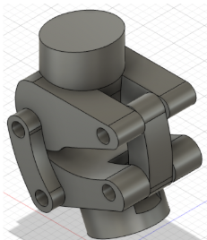
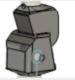
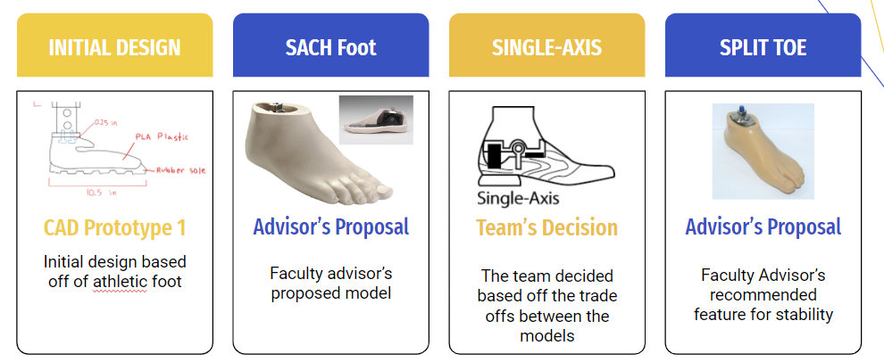
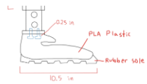
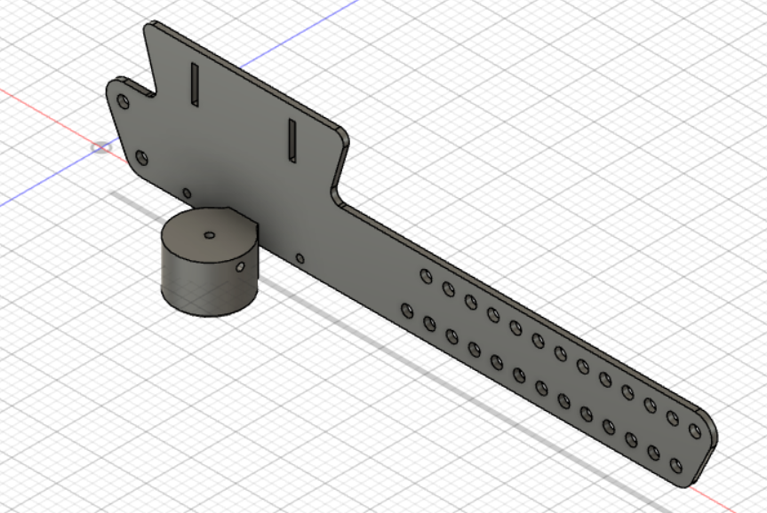
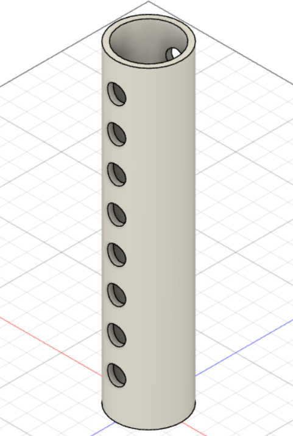
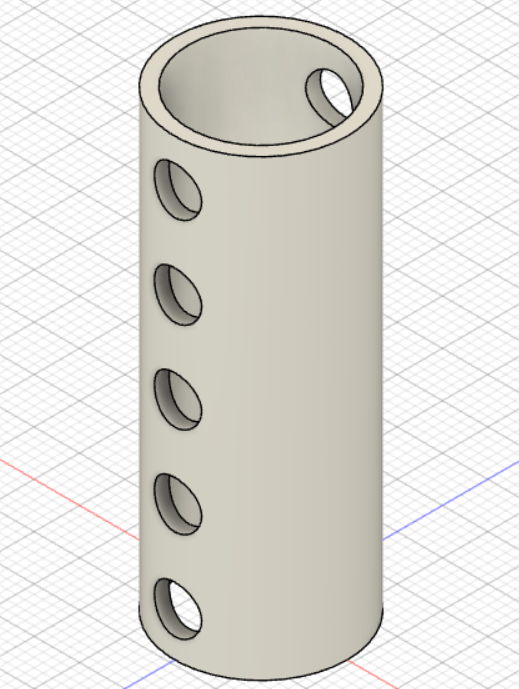

The Technical Subteam
Our technical subteam is working on a prosthetic leg that is low-cost and adaptable to Puerto Penasco's sandy terrain. Due to the prevalence of above-the-knee amputations for diabetic patients and the stigma associated with these amputations, diabetic amputees find it hard to regain mobility and return to work after an amputation. The technical subteam aims to ameliorate this by creating a prosthetic that is adaptable rather than custom fit, and that is tailored to the sandy terrain of Puerto Penasco.

Our Prototype
Our prototype is divided into 4 parts: the knee joint, the foot, the socket, and the tubular section
The Knee
 The knee joint is perhaps the most technically complicated aspect of this project. Originally, we had settled on using a single axis knee, which is technically easier to build and maintain, but we quickly realized that the tradeoff was a much less natural gait. We are currently working on building a polycentric knee as well as improving our current single-axis knee, using Fusion 360. We hope to be ready to print out a physical version of our CAD prototype in Winter 2023
The Foot
 Originally, we had intended to build our foot via CAD and 3D printing, however upon talking to our faculty advisor we have been considering adapting a SAC foot for our purposes instead. Our team is currently seeking ways to use injection moulding to replicate a SAC foot in order to create multiple foot sizes and reduce sizes, or finding ways to order existing foot models and lower costs. We are currently in talks with our community partners to discuss the logistics of this. We have finalized using a single-axis, split toe design.
The Socket
We completed a preliminary model of the socket in Summer 2022, but have since decided to rework it entirely. We have returned to the research phase for this portion of the prosthetic and are searching for ways to make the socket adaptable yet comfortable and cost-effective. We have been struggling with a lack of research into above-the-knee amputation sockets.
The Leg
 We have fully finished the CAD model for the piping of the leg. We plan to construct this out of PVC piping, which we have confirmed with our community partners is readily available in Puerto Penasco.
Leadership
Business, Communications and Travel Co-Chair

Krithika Venkatasubramanian
CS; 2025